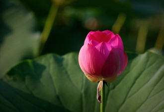

 荷花：属山龙眼目莲科，是莲属二种植物的通称。又名莲花、水芙蓉等。是莲属多年生水生草本花卉。地下茎长而肥厚，有长节，叶盾圆形。花期6至9月，单生于花梗顶端，花瓣多数，嵌生在花托穴内，有红、粉红、白、紫等色，或有彩纹、镶边。坚果椭圆形，种子卵形。荷花种类很多，分观赏和食用两大类。原产亚洲热带和温带地区，中国早在周朝就有栽培记载。荷花全身皆宝，藕和莲子能食用，莲子、根茎、藕节、荷叶、花及种子的胚芽等都可入药。其出淤泥而不染之品格恒为世人称颂。“接天莲叶无穷碧，映日荷花别样红”就是对荷花之美的真实写照。荷花“中通外直，不蔓不枝，出淤泥而不染，濯清涟而不妖”的高尚品格，历来为古往今来诗人墨客歌咏绘画的题材之一。1985年5月荷花被评为中国十大名花之一。荷花是印度、泰国和越南的国花。命名:荷花荷花 (50张)莲花、芙蕖、芬陀利花、水芝、水芸、水目、泽芝、水华、菡萏（hàndàn）古人称未开的荷花为菡萏，即花苞、水旦草、芙蓉、水芙蓉、玉环、六月春、中国莲、六月花神、藕花、灵草、玉芝、水中芙蓉、水宫仙子、君子花，天仙花、红蕖、溪客、碧环鞭蓉、鞭蕖、金芙蓉、草芙蓉、静客、翠钱、红衣、宫莲、佛座须等。一、以其外形特征命名：荷花：李时珍《本草纲目》解释说：“莲茎上负荷叶，叶上负荷花，故名。”芙蓉：亦称“夫蓉”。汉辞典《尔雅》解释道：“芙蓉之含敷蒲也。”另《说文解字》云：“未发为菡萏，已发为芙蓉。”李时珍也说，芙蓉就是“敷布容艳之意”，难怪汉代文学家司马相如把他的妻子卓文君比作是出水的芙蓉。
盒子盒子盒子盒子盒子盒子盒子盒子盒子盒子盒子盒子盒子盒子盒子盒子盒子盒子盒子盒子盒子盒子盒子盒子盒子盒子盒子盒子盒子盒子盒子盒子盒子盒子盒子盒子盒子盒子盒子盒子盒子盒子盒子盒子盒子盒子盒子盒子盒子
怪异的盒子